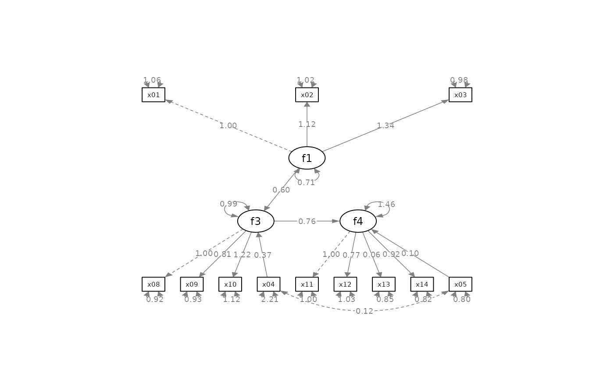
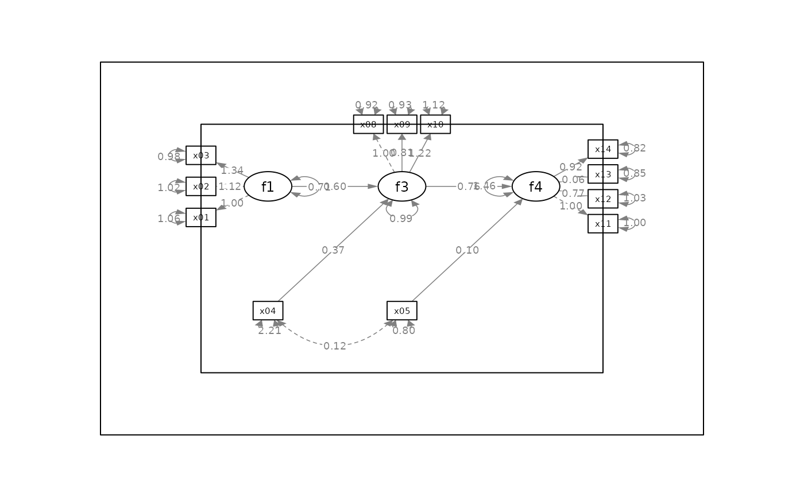
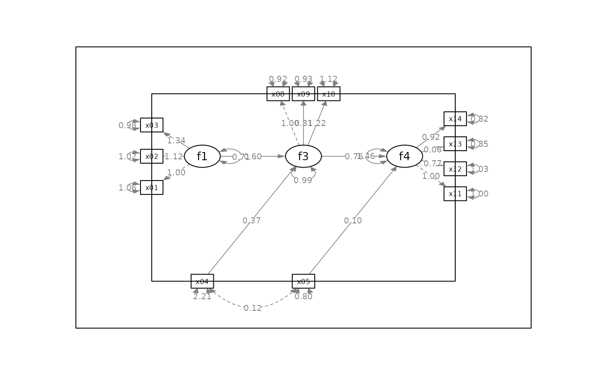

Rescale the layout of a
qgraph object, such as the output
of semptools functions that modify
the output of semPlot::semPaths().
Arguments
- semPaths_plot
A qgraph::qgraph object generated by
semPlot::semPaths(), or a similar qgraph object modified by other semptools functions.- x_min, x_max, y_min, y_max
The ranges of x-coordinates and y-coordinates after rescaling. Default is -1 for
x_minandy_min, and 1 forx_maxandy_max. Change them to enlarge or shrink the plot.
Value
A qgraph::qgraph based on the original one, with the layout matrix rescaled.
Details
The plot generated by some
functions, such as
set_sem_layout(), may have the area
underused for some model. This
function rescale the layout matrix,
just like what the rescale argument
of semPlot::semPaths() does.
Examples
library(lavaan)
library(semPlot)
mod <-
'f1 =~ x01 + x02 + x03
f3 =~ x08 + x09 + x10
f4 =~ x11 + x12 + x13 + x14
f3 ~ f1 + x04
f4 ~ f3 + x05'
fit_sem <- sem(mod, sem_example)
p <- semPaths(fit_sem, whatLabels="est",
sizeMan = 5,
nCharNodes = 0,
nCharEdges = 0,
edge.width = 0.8,
node.width = 0.7,
edge.label.cex = 0.6,
mar = c(10, 10, 10, 10),
DoNotPlot = TRUE)
plot(p)

indicator_order <- c("x04", "x05", "x01", "x02", "x03",
"x11", "x12", "x13", "x14", "x08", "x09", "x10")
indicator_factor <- c("x04", "x05", "f1", "f1", "f1",
"f4", "f4", "f4", "f4", "f3", "f3", "f3")
factor_layout <- matrix(c( "f1", "f3", "f4",
"x04", "x05", NA), byrow = TRUE, 2, 3)
factor_point_to <- matrix(c("left", "up", "right",
NA, NA, NA), byrow = TRUE, 2, 3)
p2 <- set_sem_layout(p,
indicator_order = indicator_order,
indicator_factor = indicator_factor,
factor_layout = factor_layout,
factor_point_to = factor_point_to)
# The original plot with too much unused area
plot(p2)
rect(-1, -1, 1, 1)
rect(-1.5, -1.5, 1.5, 1.5)

# Expand the plot
p3 <- p2
p3 <- rescale_layout(p3)
plot(p3)
rect(-1, -1, 1, 1)
rect(-1.5, -1.5, 1.5, 1.5)
